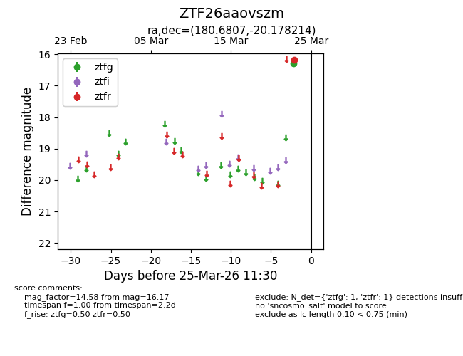
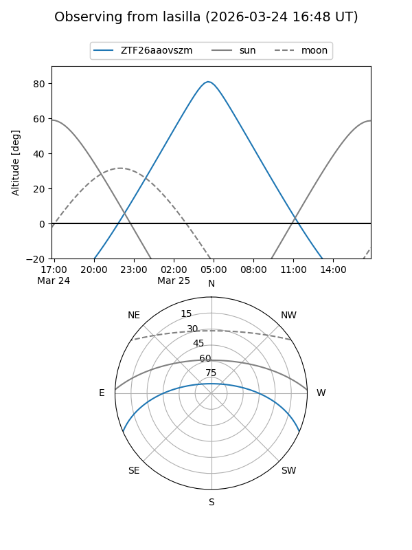
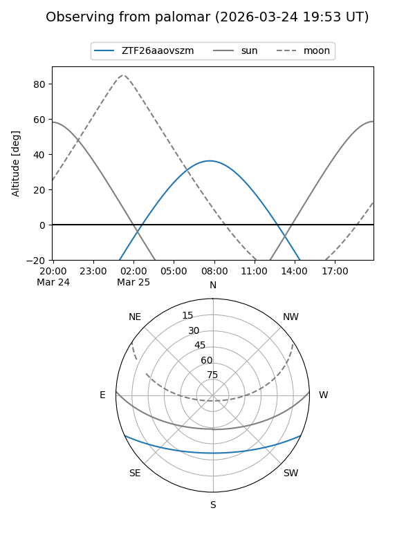

ZTF26aaovszm
Target ZTF26aaovszm at 2026-03-25 11:35
Aliases and brokers:
FINK: link
Lasair: link
ALeRCE: link
alt names
ZTF26aaovszm (ztf,fink_ztf)
Coordinates:
equatorial (ra, dec) = 180.6807,-20.17821
equatorial (HMS+DMS) = 12:02:43.37,-20:10:41.57
galactic (l, b) = (287.6629,+41.24469)
Flags:
Photometry:
last ztfg=16.30, ztfr=16.17
1 ztfg, 1 ztfr detections
Lightcurve

Visibility


Additional plots